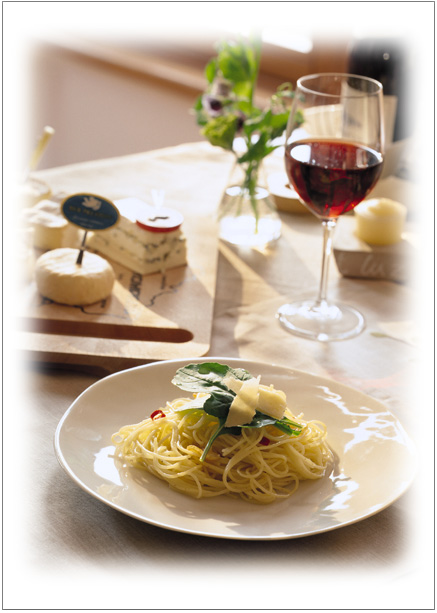
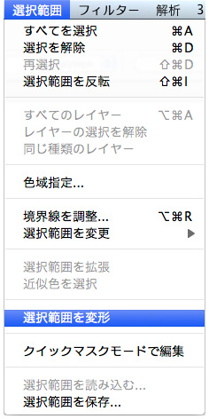
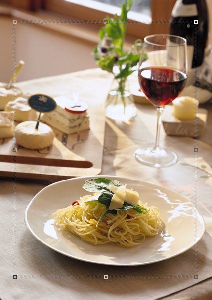
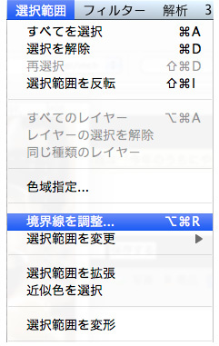
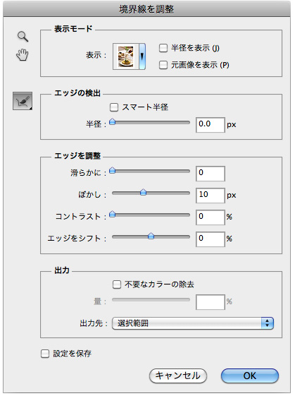
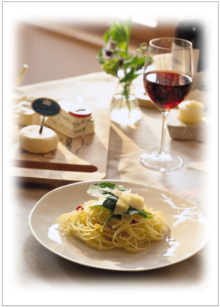
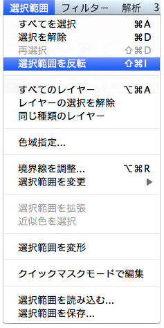
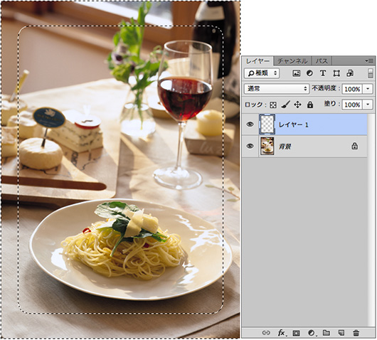
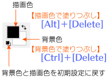
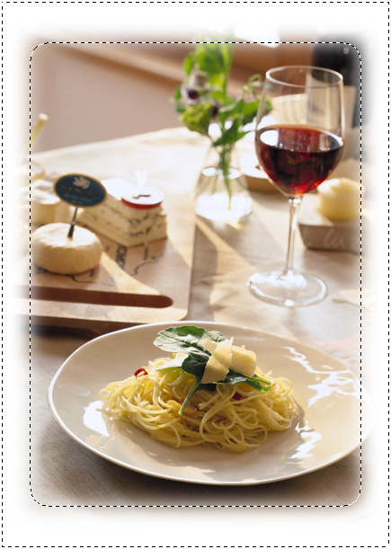

ビネット効果

- 素材↓
（1）すべてを選択。【Ctrl＋A】All
（2）「選択範囲」メニュー→「選択範囲の変形」→「85％」

※オプションバーに鎖のマークをクリックして数値を入力し、確定します。

- 「バウンディングボックス」が選択されている状態で、Enterキーを２回 押します
- １回は、数値の確定
- もう１回は、「バウンディングボックス」を確定させ「選択範囲」にする
（3）境界線を調整（選択とマスク）



（4）「選択範囲」メニュー→「選択範囲を反転」

（5）ビネットの色を塗るための新規レイヤー作成

（6）背景色（白）で塗りつぶし
※【Ctrl＋Delete】


（7）選択範囲を解除して完成